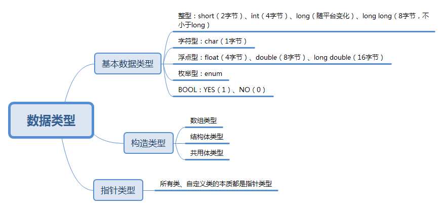

一、OC的基础语法
Objective-C是在C语言的基础上，增加了一些自己独有的特性，将面向过程的C语言添加了面向对象编程的功能，由于之前已经有C的经验，下面只介绍Objective-C的特性
关键字
OC中独有的大部分关键字是以@开头的，常用的关键字有：@interface、@implementation、@end @public、@protected、@private、@selector @try、@catch、@throw、@finally @protocol、@optional、@required、@class @property、@synthesize、@dynamic等。以及一些不以@开头的但是是对C的扩展的关键字：self、super、id、instancetype等。
#import
和C中的#include不同的是import不会重复包含相同的头文件。
NSLog
NSLog输出完毕信息之后会默认加一个\n，如果我们手动加了一个\n，NSLog的自动换行就会失效。
在输出信息的同时还会输出一些与程序有关的其他信息(系统时间、程序名、进程ID、线程ID)。
NSLog函数支持printf函数的全部格式控制符，其用法也相同。
NSLog函数的字符串参数前面必须要加一个@符号，这是OC里的字符串格式。
NSLog可以使用%@格式控制符输出对象，而printf不能输出对象。
NSLog函数的第一个参数是NSString类型的指针，所以必须给一个OC字符串。
二、OC的基本数据类型
总览

自动数据类型转换顺序
short –> int –> long –> long long –> float –> double –> long double（注意：整型往浮点型自动转换）
强制类型转换：整型转化为浮点型时基本不会有太大的变化，而当浮点转化为整型时，数值的小数部分会直接舍去
OC中NSLog输出函数的格式
| 格式字符 | 说明 | 格式字符 | 说明 |
|---|---|---|---|
| x | 无符号十六进制 | g | 自动选用%f或%e输出，保证以最简形式输出，并不会输出无意义的0 |
| u | 无符号十进制 | p | 以十六尽职形式输出指针变量所代表的地址值 |
| s | 输出C风格字符串 | l | 用在d、o、x、u之前用于输出长整型；在f、e、g之前用于输出长浮点型 |
| o | 无符号八进制 | e | 指数形式输出，数值不分默认输出6位小数 |
| m | 用于制定输出数据所占的最小宽度为m位 | .n | 对于浮点数，表示输出n位小数，对于字符串，表示截取的字符个数 |
| d | 带符号十进制 | f | 小数形式输出，默认输出6位小数 |
| c | 字符形式，只输出一个字符 | @ | 输出OC对象 |
| - | 表述输出的数值向左边对齐 |
枚举（enum）
枚举的本质是无符号整数，可以通过直接用数值的方式给枚举变量进行赋值。
1 | typedef NS_OPTIONS(NSUInteger, Event) |
在使用或运算操作两个枚举值时，C++默认为运算结果的数据类型是枚举的底层数据类型即NSUInteger,且C++不允许它隐式转换为枚举类型本身，所以C++模式下定义了NS_OPTIONS宏以保证不出现类型转换。
所以在我们需要同时存在多个枚举同时使用时要使用NS_OPTIONS，普通情况下使用NS_ENUM即可。
布尔（BOOL）
OC的底层实际上是使用signed char来代表BOOL，所以如果一个非0整数的低八位表示的数为0，则其转化位BOOL类型值为NO。即只会取最后8位数据来进行判断。
NSInterger
大致相当于long型整数
NSUInterger
大致相当于unsigned long型整数
CGFLoat
在64位平台大致相当于double，在32位系统大致相当于float